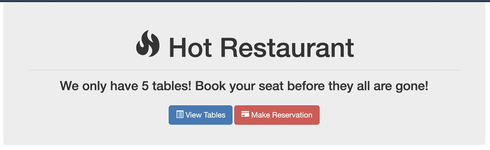
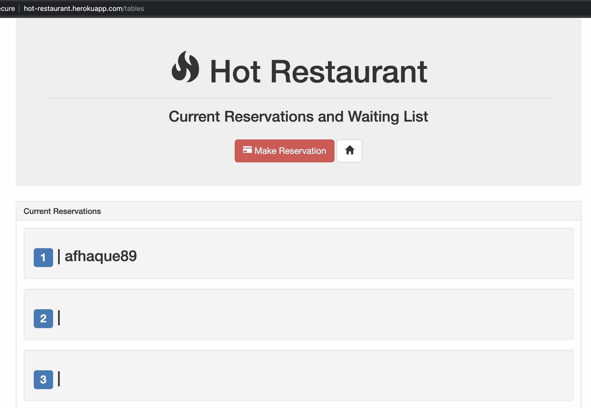
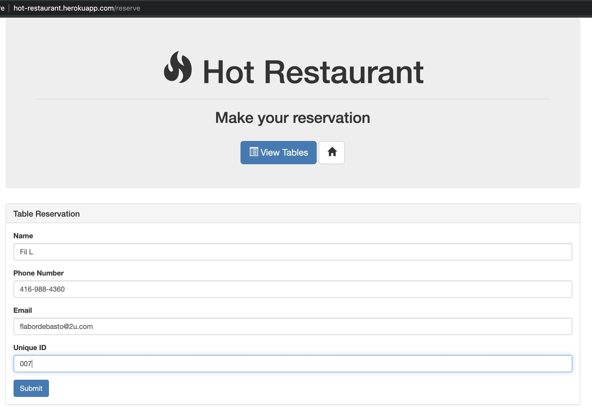

In preparation for our start of project #1, we are going to build a mini-project with our team today - of which we will be doing the full range of skills from UI build to the actual API's.
Our end goal is to use build a restaurant booking application -- the full stack:
The homepage (index.html):
The full listing of tables booked (listings.html):
When adding an entry (reserve.html):
To tackle this project there will likely be 3 key phrases
Look at the working application and decide what endpoints your application will need. ex. How will you get the table listing? How will you save a table listing?
Build the initial UI, and remember to have input boxes to capture the fields needed.
Use FontAwesome.com for some awesome icons to enhance your site!
Once built, wire up the capturing of inputs and display them in the console.log
Create fake table data -- coordinate with the API team -- so you can start rendering this into the UI. Once the actual API's are ready, you will switch out and make sure your javascript fetch/$.ajax calls work.
Finally, look at proper messaging and error handling (incorrectly filled fields, API errors, etc)
Create fake table data Examine the API data and wire-up the result output to show the matching data.
Remember to use a LOT of console.log comments to understand what is happening at each step of AJAX call.
Integrate and finish up UI elements, and error message handling, etc.
If you manage to complete it in time, consider adding these two features to your sites:
Now that it's built, it's time to deploy it to Heroku! See supplementary reading material -- or ask Daniel to help you with this!
Congratulations on tackling a challenging full-stack project!